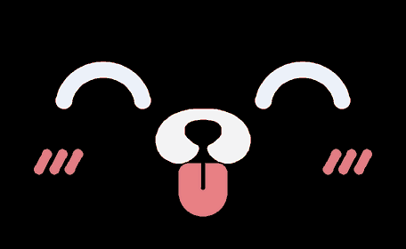
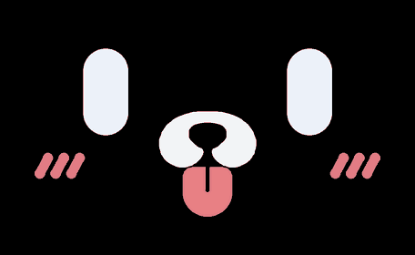

맥 화면에서
무료
앱만 있으면 강아지가 화면 구석에 살아요. 눌러서 말하고, 끌어서 옮겨요.
무료로 받기한국어로 말하면 알림, 타이머, 앱 열기를 대신 해요. 인터넷 없이, 무료로.
무료로 받기M1 이상 맥 · macOS 14 이상 · 0.5GB (AI 4.6GB는 앱에서 받아요)

한국어로 말해요듣는 것도, 생각하는 것도, 대답하는 것도 맥 안에서 해요.
와이파이를 꺼도 돼요AI를 한 번 받아 두면 인터넷 없이 움직여요.
무료예요가입도, 카드 등록도 없어요.
글피 오후 4시에 세탁소 알려 줘날짜를 계산해서 그 시간에 알려 줘요.
40분마다 물 마시라고 해정한 시간마다 알려 줘요. "마셨어" 하면 기록해요.
25분 집중 타이머 켜 줘집중하는 동안 크롬과 사파리의 유튜브, 인스타 같은 탭을 닫아 줘요.
계산기 꺼 줘앱을 열고 꺼요. 끌 때는 먼저 허락을 받아요.
자리 비울게화면을 잠그고, 누가 화면을 보면 경고해요.
커피 마실까 말까그냥 이야기해도 돼요.
꼭 필요한 건 아니에요. 앱만으로도 다 돼요. 책상 위에 두고 싶은 분을 위한 안내예요.
Waveshare ESP32-S3-Touch-AMOLED-1.64. 뒷면에 Rev1이라고 적힌 보드에서 확인했어요. 다른 판은 화면이 안 나올 수 있어요.
지금은 시험판이에요. 보드는 안 빠지지만 옆 입구 마감이 거칠어요.
USB 선으로 맥에 꽂고 넣어요. 터미널에 명령어를 몇 줄 넣어야 해요.
USB 선으로 맥에 꽂아 두면 앱이 보드를 찾아요. 꾹 누르고 말하면 돼요.
받은 MoniPet 파일을 열고, MoniPet을 응용프로그램으로 끌어다 놓으면 돼요.
아직 애플의 확인을 받지 않은 앱이라 맥이 한 번 막아요.
"완료"를 누르세요"휴지통으로 이동"을 누르면 모니펫이 지워져요. 이 창은 애플이 아직 확인하지 못한 앱이라는 뜻이에요.
아래로 내리면 "보안"에 있어요. 한 번 더 물으면 "그래도 열기"를 또 누르고, 맥 암호나 지문을 넣어요. 2번을 하고 나서 약 1시간 동안만 보여요. 안 보이면 2번을 다시 하세요.
4.6GB를 한 번만 받아요. 끊겨도 이어서 받아요.
마이크를 쓴다고 물으면 허용해 주세요.
애플의 확인을 받지 않은 앱을 여는 것은 믿을 수 있는 곳에서 받았을 때만 하세요. 모니펫은 이 페이지에서만 받으세요.
무료 모니펫으로도 충분해요. 화면을 보고 대신 눌러 주는 일까지 시키고 싶으면 내 Claude 키를 넣으세요. 모니펫은 돈을 받지 않아요. AI 사용료는 쓴 만큼 Anthropic에 직접 내요.
platform.claude.com에서 가입해요. 평소 쓰는 Claude 구독과는 따로예요.
결제(Billing) 메뉴에서 카드로 충전해요. 쓴 만큼 여기서 빠져나가요.
API Keys 메뉴에서 새 키를 만들어요. sk-ant-로 시작하는 글자예요. 키는 비밀번호와 같아요. 남에게 보여 주지 마세요.
"더 똑똑하게 (내 Claude 키)" 칸에 붙여넣고 저장해요. 그다음 "쓸 AI"를 Claude로 바꿔요.
처음 화면 일을 시키면 맥이 "화면 기록"과 "손쉬운 사용" 권한을 물어요. 시스템 설정에서 모니펫을 켜 주세요.
보내기, 지우기, 결제처럼 되돌리기 어려운 일은 YES를 눌러야만 해요. Claude를 고르면 말한 내용과 화면 사진이 Anthropic으로 가요. 키는 이 맥의 키체인에만 저장돼요.
M1 이상 칩, macOS 14 이상에서 쓰도록 만들었어요. 지금까지는 메모리 16GB 맥에서 확인했어요. 8GB 맥은 아직 확인하지 못했어요. 윈도우는 안 돼요.
모니펫이 말을 알아듣고 대답하게 해 주는 AI예요. 구글이 공개한 Gemma를 써요. 맥 안에 두기 때문에 인터넷 없이 무료로 쓸 수 있어요.
무료 모니펫은 맥 안에서 듣고 생각해요. AI를 처음 받을 때만 인터넷을 써요. 내 Claude 키를 넣고 Claude를 고르면, 그때는 말한 내용과 화면 사진이 Anthropic으로 가요.
"자리 비울게"를 켰을 때만, 누가 화면을 보는지 확인하려고 써요. 사진은 저장하지 않아요.
아니요. 앱만 있으면 돼요. 강아지 얼굴도 맥 화면에 나와요.